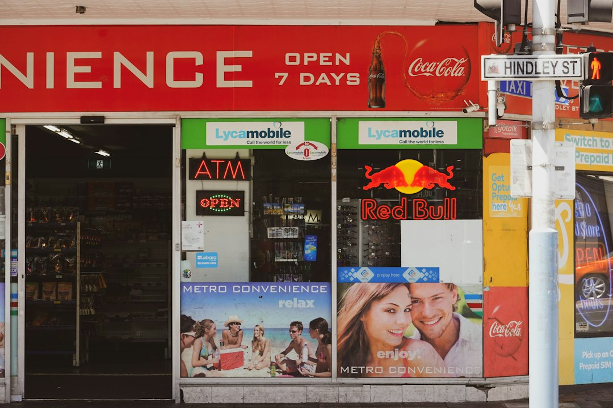

Adelaide borrowers can speak with licensed broker support for home loans, investment loans, car finance, business loans, commercial loans and equipment finance. The source page states the enquiry support is free, 50+ partner brokers are referenced, those brokers access 40+ lenders, and the coverage includes Adelaide and South Australia. It also states Adelaide Finance Broker is an enquiry website, with licensed brokers providing credit assistance.
For borrowers comparing finance brokers adelaide options, the useful starting point is loan purpose, broker specialisation and the questions that clarify lender choice before an application is lodged.
Finance Brokers Adelaide Explained
Adelaide Finance Broker is described in its source page as an enquiry website for people seeking suitable licensed broker support. It also states that licensed finance brokers provide all credit assistance, so the first conversation should clarify the borrower need, the broker's role and the likely lending path.
The practical starting point is the job being financed. A home loan, investment loan, car loan, business loan, commercial loan and equipment finance request can each require different documents, lender questions and product comparisons. The page says partner brokers access 40+ lenders, but the useful comparison still depends on what is being bought, who is borrowing and whether the enquiry is personal, property related or business related.
Who This Applies To
This guide applies to people in Adelaide or South Australia who want to prepare before speaking with a finance broker. It is relevant where the borrowing need matches the stated service categories, including residential lending, investment property lending, vehicle finance, business borrowing, commercial lending and equipment finance.
- Home loan borrowers: ask what information a mortgage broker needs to compare repayments, fees, loan features and lender requirements.
- Investment borrowers: ask how the broker will assess existing debts, the intended ownership structure and the purpose of the loan.
- Business borrowers: ask which financial records are needed before discussing business loans, commercial finance or equipment finance.
- Vehicle borrowers: ask whether the enquiry is limited to car finance or whether other debts and repayment commitments also need to be reviewed.
Questions To Ask Before Choosing Broker Support
The source page says enquiry support is free and that brokers are paid by lenders. Borrowers should still ask how the broker is paid, which lenders are being compared, whether any lender is excluded, and what fees may appear in the loan itself. ASIC Moneysmart's home loan guidance highlights interest rates, costs and repayments as items borrowers should compare when looking at home loans.
Local fit should be tested through the facts of the application, not through suburb labels alone. A borrower can ask whether the broker has dealt with the same type of property, income position or business purpose. The Adelaide material names service areas across the CBD, Adelaide Hills and other suburbs, but it does not support any fixed postcode rule, approval promise or lender outcome.
Broker Assisted Comparison Versus Going Direct
A direct lender conversation can suit a borrower who already knows the bank and product they want. Broker assisted comparison is more useful when several lenders need to be considered, the application needs structuring, or the borrower wants an explanation of how rate, fees and features affect the overall fit.
The Adelaide page says partner brokers work with major banks and specialist lenders. That gives borrowers a basis for asking how broad the comparison will be for their own scenario. For a related residential lending angle, the companion guide on home loan broker Adelaide considerations is useful when the question is specifically about a home loan rather than car, business, commercial or equipment finance.
Documents And Decision Signals
Before speaking with a broker, borrowers can prepare a short evidence pack. Useful items may include income details, existing loan balances, living expense notes, business records where relevant, and a clear description of the new lending purpose. That preparation does not promise approval, but it helps identify which lender questions need to be answered.
Strong questions include: which lenders are suitable for this scenario, what would make the application harder, which documents are still missing, and how the broker explains trade offs between rate, fees, repayment flexibility and loan features. For investment property decisions, ASIC Moneysmart provides general consumer guidance to help people consider whether property investment is right for them.
- Define the loan purpose. State whether the enquiry is for a home loan, investment loan, car finance, business loan, commercial finance or equipment finance.
- Prepare the evidence. Gather income, debt, expense and business documents that help a broker assess which lender questions are likely to matter.
- Ask about lender range. Check which lenders will be compared and whether the broker can explain why some options are unsuitable.
- Confirm the role. Remember the named business is an enquiry website and licensed brokers provide credit assistance.
| Borrower path | Useful when | Questions to ask |
|---|---|---|
| Broker assisted comparison | You want several lender options considered for a home loan, investment loan, car finance, business loan, commercial loan or equipment finance. | Which lenders are compared, how is the broker paid, and what loan fees or conditions should be checked? |
| Direct lender conversation | You already prefer one lender or have a simple product in mind. | What alternatives have not been compared, and how do features and fees affect the total fit? |
| Specialist finance discussion | The need involves business assets, commercial property, equipment or a self employed borrower profile. | What records are needed, what security is expected, and which lender requirements could affect the application? |
Common questions
Is the Adelaide enquiry business itself a broker? No. The source page states Adelaide Finance Broker is an enquiry website and that licensed finance brokers provide all credit assistance.
What loan types are listed? The listed service areas are home loans, investment loans, car loans, commercial loans, business loans and equipment finance.
How many lenders can partner brokers access? The source page says partner brokers access 40+ lenders. Borrowers should still ask which lenders are relevant to their own scenario.
Is the enquiry support paid by the borrower? The page states the broker enquiry support is free and that brokers are paid by lenders. Loan fees and product costs should still be checked before choosing a lender.
This guide covers broker selection, borrower preparation and enquiry questions for Adelaide finance needs listed on the source page.